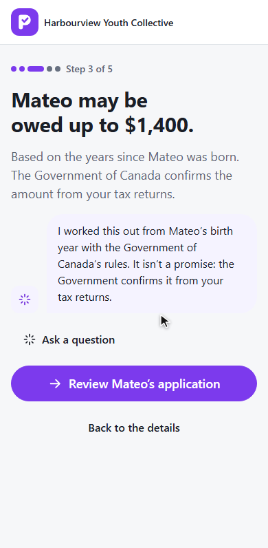
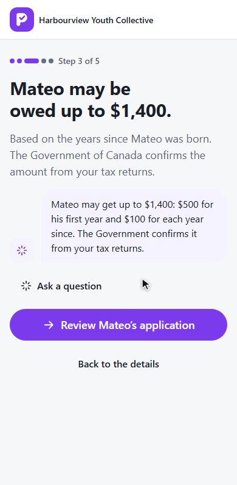
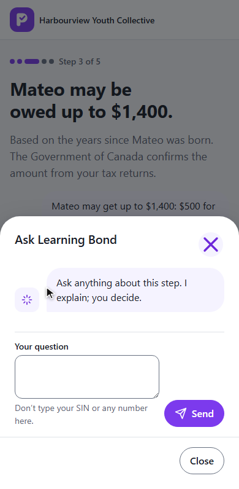
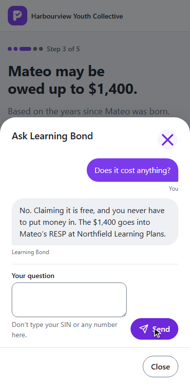
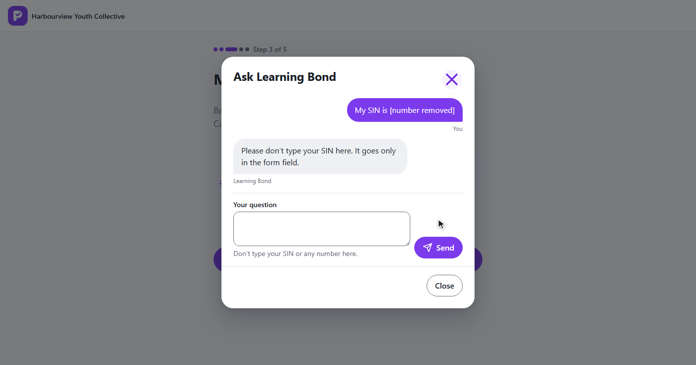

PromiseHub · Video 92
The model-backed Learning Bond agent
A language model behind the same bubble, explaining and never acting
A language model behind the same bubble, explaining and never acting
The approved line, then the model's words; then a question.


POST /g/learning-bond/{token}/agent · fixed, reply, source · 10 s


ph-message-thread · GET .../agent/conversation · the household's own
GetStatus, GetEstimate, ListBenefits, ExplainStep, OfferCallbackModel down, a SIN refused, a send that fails.

60 words · only the rules' amounts · no nine digits · else the fixed line
The household's language, every time.
ILanguageModel · Claude through the Anthropic SDK when a key is setADR 0085 · ClaudeLanguageModel · UnconfiguredLanguageModel
LearningBondAgentTests with FakeLanguageModel: replace, timeout, failure, context, SINagent spec · phone and laptop · axe
The Learning Bond journey is complete